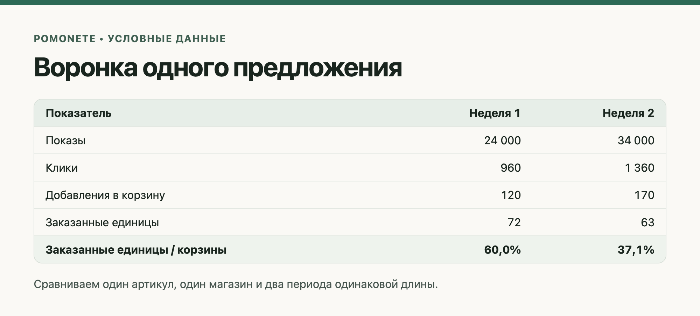

Где в аналитике Яндекс Маркета искать разрыв
За первую неделю у светильника 24 000 показов, 960 кликов, 120 добавлений в корзину и 72 заказанных товара. Во вторую неделю 34 000 показов, 1 360 кликов, 170 добавлений и 63 заказанных товара. Периоды одинаковой длины, обе выгрузки сняты после конца недели. Для учебной воронки считаем каждую покупку как одну единицу, а источники показов и кликов берём из одного и того же среза.
Делим клики на показы. В обе недели получилось 4%. Делим добавления в корзину на клики. В обоих случаях 12,5%. Делим заказанные единицы на добавления. Раньше было 60%, теперь примерно 37,1%. При старом отношении 170 добавлений дали бы 102 заказанные единицы. Разница с фактом составляет 39. Она показывает масштаб разрыва при принятом допущении. Из этих 39 нельзя сразу делать вывод о потерянных продажах: аудитория могла измениться, а часть людей могла вернуться за товаром уже в следующем периоде.
Отношение заказанных единиц к добавлениям в этой таблице служит ориентиром по недельным агрегатам. Числитель и знаменатель не обязательно относятся к одной группе покупателей. Если нужны выводы о последовательности действий конкретного клиента, понадобится источник, который позволяет связать шаги. Для текущей задачи достаточно выяснить, какие условия изменились к концу пути и в каких срезах упало отношение.

В кабинете Яндекс Маркета отчёт находится в разделе «Аналитика продаж». Перед сравнением проверьте период, выбор магазина, товар и доступные показатели. Сохраните дату выгрузки. Если один сотрудник смотрит заказы по времени создания, а второй проверяет доставленные товары по времени доставки, их результаты описывают разные события. Для разбора полезно сохранить настройки отчёта рядом с цифрами и возвращаться к ним при повторной проверке.
Официальная справка по аналитике продаж Яндекс Маркета
Как селлер проверяет цену и доставку
У светильника два варианта отделки и несколько регионов продаж. В понедельник менеджер сравнивает цену, сроки доставки и доступность предложения с данными предыдущей недели. Первый факт: цена обе недели была 2 490 ₽. Второй: для одного крупного региона ожидаемая доставка выросла с двух дней до пяти. Третий: рост переходов пришёлся сразу на несколько регионов. По тем данным, где доступны сопоставимые региональные разрезы, провал заказов заметнее всего там, где изменился срок.
Теперь нужна проверка посерьёзнее. Регион и срок могли измениться вместе со структурой спроса. В журнал заносим даты, когда произошло изменение, и сравниваем динамику с сопоставимым регионом, где срок не менялся. Если в обоих срезах падение одинаково, доставку преждевременно назначать единственной причиной. Если провал совпал по времени с удлинением доставки только в одном регионе и держался после выходных, у продавца появляется предмет для отдельной проверки логистики.
Аналитика продаж на Яндекс Маркете приносит больше пользы, если селлер записывает события по ходу недели. Запись «во вторник поменяли обещанный срок доставки» ценнее, когда к ней приложено, какой товар, какое предложение и какой регион затронуты. Через месяц никто не вспомнит, меняли срок до обеда или только для одного склада. Такой журнал собирают из внутренних записей команды. Для него хватит столбцов «дата», «артикул», «магазин», «что поменялось» и «кто проверит».
Бывает и другая картина. Переходы стабильны, но у корзин просела только неделя с промо. В понедельник продавец видит действующую цену и забывает, что в пятницу цена по акции закончилась в середине дня. Сравните интервалы, у которых были одинаковые условия, и добавьте к таблице даты начала и окончания акции. Неделя целиком может спрятать полтора дня, которые объясняют половину различия. При маленьком числе заказов сохраняйте рядом сами количества: изменение с двух до одного заказа выглядит как минус 50%, хотя речь об одной единице.
Как проверить результат через неделю
Допустим, команда восстановила прежний срок доставки для одного региона и оставила цену и фотографии светильника прежними. На следующем сопоставимом интервале продавец опять фиксирует показы, клики, корзины и заказы. Для региона смотрит доступные цифры на одинаковом наборе предложений. Для магазина в целом проверяет, вернулось ли отношение заказанных единиц к корзинам в обычный диапазон. Если показатель восстановился, смотрим, удержался ли эффект на второй неделе и что стало с затратами на доставку.
Решение лучше записать перед началом проверки. Например: «Предыдущий срок возвращён в среду. Сравниваем следующие семь полных дней с семью полными днями до изменения. Цена и карточка сохранены. В следующую среду сверяем срок доставки, заказы и фактически доставленные единицы». Если в этот же период прошла большая акция, в итогах отдельно показываем дни акции. Это снижает риск записать рост в заслугу логистике, когда к тому же предложению одновременно пришло больше покупателей из промо.
Команда Pomonete занимается финансовой аналитикой для селлеров Яндекс Маркета. В нашей работе данные из воронки кабинета помогают сформулировать вопрос, а экономика доставленных заказов помогает понять цену решения. После восстановления срока магазин может получить больше заказов и при этом сильнее потратиться на обработку. Если продавец переносит запас или меняет схему отгрузки, сверяйте эффект на вкладе с доставленной единицы и на сумме за неделю. Условная воронка выше показывает, где искать, а фактические расходы своего магазина в неё подставляет сам селлер.
Шаблон проверки укладывается в одну строку: товар, период, четыре показателя, изменение условий, дата повторной проверки. Когда у селлера есть такая строка, разговор с менеджером начинается с конкретного региона и конкретной недели. И если на другой карточке показатели действительно ломаются между показами и кликами, у команды уже есть способ это увидеть отдельно. В одном магазине причины могут быть разными даже в одной категории, поэтому место разрыва проверяем заново для каждого решения.
Источник материала: команда Pomonete.